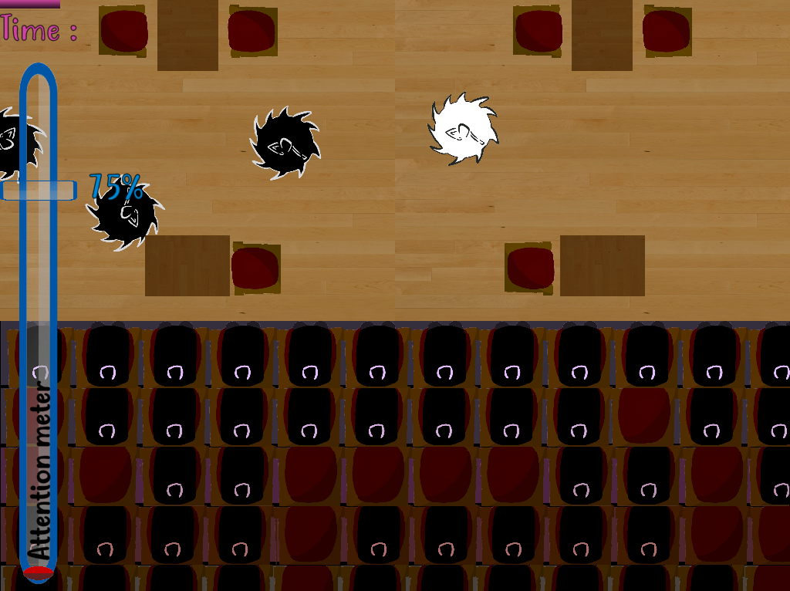

JEUX 3D
-
LES AS DE LA JUNGLE
2020
Aidez les As de la Jungle à retrouver les oeuvres volées de l'Abbaye-Ecole de Sorèze
pour déjouer les plans de l'affreux Vladimir ! -

HOCK CINEMA
2020
Evoluez dans un cinéma angoissant datant des années 30.
Pour survivre, ne comptez pas seulement sur vos sens... -

R DRIFT
2020
Courez contre la montre (mais aussi la rage !) dans ce jeu de plateforme
réalisé pour la Brackeys Game Jam n°3. -

PAINT RUNNER
2019
Un Endless Runner sur le thème "Passage" réalisé pour l'Extra Credits Game Jam n°5. -

LA COMMUNE
2018
Combattez les Maraudeurs volant les ressources de la Commune dans ce
jeu de défense se déroulant dans une Russie post-ère glaciaire.
JEUX 2D
-

MISSION ZIGOMAR
2020
En route pour les musées de la ville de Paris ! Parcourez l'histoire de France
et tentez de déjouer les plans du terrible Zigomar ! -

SHINING STAR
2019
Un jeu de réflexion et d'obstacles réalisé pour la GMTK Game Jam 2019. -

FUNGI PARTY
2019
Rassasiez le vieux roi Fungi dans ce jeu d'arcade inspiré du cultissime Snake ! -
GEOMETRY TANKS
2019
Plongez au coeur d'un combat d'arène multijoueur dans cet hommage nostalgique
aux anciens jeux Flash de combat d'arène des années 2000. -

HACK THE PLANET
2019
Une révolution se prépare. Cette République vacillante veut faire taire
les voix dissidentes. Mais les choses ne doivent pas forcément en être ainsi...